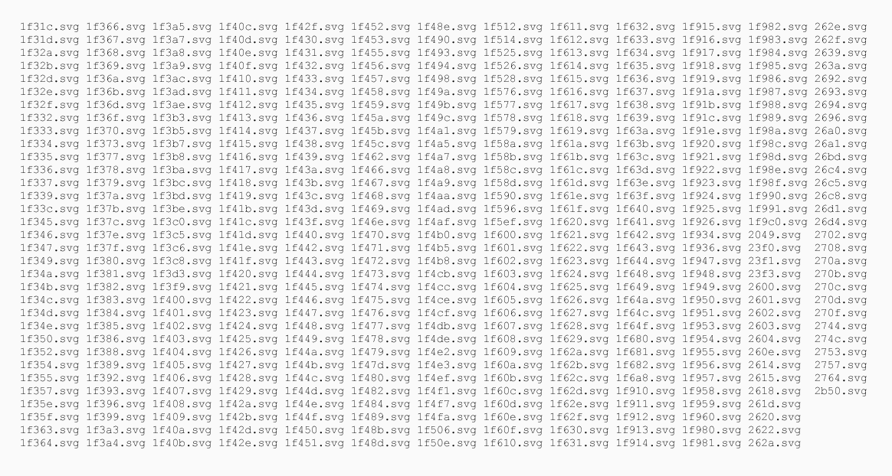

Not to be confused with... üòï

Snapchat by Snap Inc.
Snapchat by Snap Inc.
“PWAs combine the best of web & the best of native” üíØ
“PWAs are all about removing friction” üèé
gulp.task('generate-service-worker', function(callback) {
swPrecache.write(path.join(rootDir, 'service-worker.js'), {
staticFileGlobs: [rootDir + '/**/*.{js,html,css,svg}'],
stripPrefix: rootDir
}, callback);
});// sw.js
import resources from '\0initial-resources';
...
cache.addAll( resources );

Emoji One SVGs (left), Unicode emojis (right)
const RESOURCES = [
'/',
'/index.html',
...
];
...
cache.addAll( RESOURCES );
window.open(saveCanvas.toDataURL('image/png'), '_blank');toolbox.router.get(‘/images’, toolbox.cacheFirst);toolbox.router.get(‘/api’, toolbox.networkFirst);toolbox.router.get(‘/profile’, toolbox.fastest);

navigator.serviceWorker.ready.then(function(reg) {
return reg.sync.register('syncTest');
}).then(function() {
log('Sync registered');
});